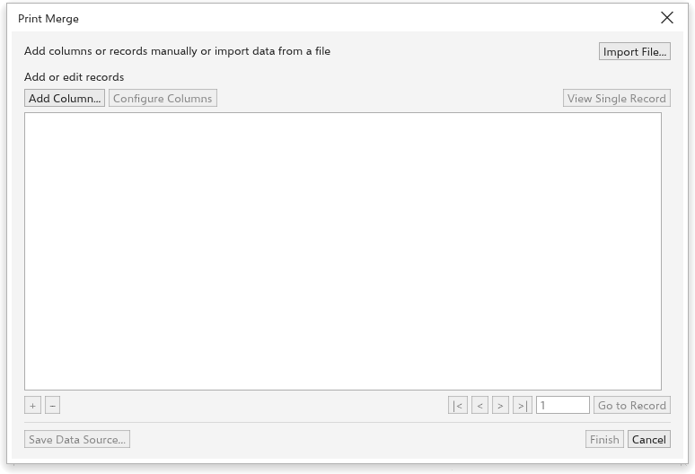

Questa pagina non è ancora tradotta ed è mostrata in inglese.
Print merge
Print merge fills a design with data, to make many versions of it: name badges, numbered tickets, certificates, labels with QR codes. Each record of your data becomes a copy of the page, filled in.
Setting up a merge
- Design the page. Where a value goes, type the field name in angle brackets in a text object, such as
<Name>. - Choose File > Print Merge > Create/Load Print Merge.
- Add the data:
- Import file reads a CSV file or an Excel workbook (
.xlsx, its first sheet) whose first line names the fields. Fields named like a photo or a picture, or whose cells are picture files, start as pictures, fields named QR as QR codes; the types show at once to be changed; - or Add column to add fields by hand, then add records with +.
- Import file reads a CSV file or an Excel workbook (
- Click Finish. The Print Merge panel opens, where you put the fields on the page and make the merge.

The Print Merge panel
The Print Merge panel (also under Window > Panels) works with the data source you created or loaded:
- Create and Edit open the records.
- Choose the kind of field, Text, Picture or QR code, and the column under Data source columns.
- For a picture, Pictures folder chooses the folder your photos are in, when the data names only their files (a name without an extension, such as
1024, finds1024.jpgor1024.png). Placeholder image chooses a picture that stands in for the merged ones while you design, and Align and scale sets where each picture goes in its frame: click one of the nine points to anchor it, then choose Actual size, Fit proportionally, Fill proportionally (the frame cuts what is outside) or Stretch to fill. - Insert Field puts the field in the text you are editing, or places a new text, picture frame or QR square in the middle of the view. Move and size it like any object.
- Select a field and click Update Field to change its column or its alignment and scale.
- Create Merged Document makes the merged pages in a new drawing: the page you are on is copied once per record and each copy is filled in. Your design stays as it is. Print Merged Document does the same and opens Print.
Perform Merge instead adds the filled copies to the current drawing, right after the page, named after the page and the record number.
Kinds of field
- Text: replaces
<Field>in every text of the page. - Number: a counter you do not type: a start, a step and a number of digits (start 7, step 3, digits 3 gives 007, 010, 013).
- Picture: the cell holds the path of a picture. A text holding only
<Field>becomes the picture, as large as fits its box. Put that text inside a frame with Place Inside Frame (a photo frame) and the picture fills the frame, cut by it. A rectangle, ellipse or curve named<Field>(in the Objects panel) takes the picture inside it the same way.
Fields work in groups and frames too, so a card can be grouped.
- QR code: a text holding only
<Field>becomes a QR code of the cell's text.
An empty cell, or a picture that does not load, removes that object from the record's page.
Editing the records
Configure columns renames fields, changes their type and counter settings, and removes fields. View single record shows one record as a form; use the arrows or Go to record to move through them. The placeholder buttons insert a field into the text you are editing. Save data source writes the records as a CSV file.
Edit Print Merge reopens the records.